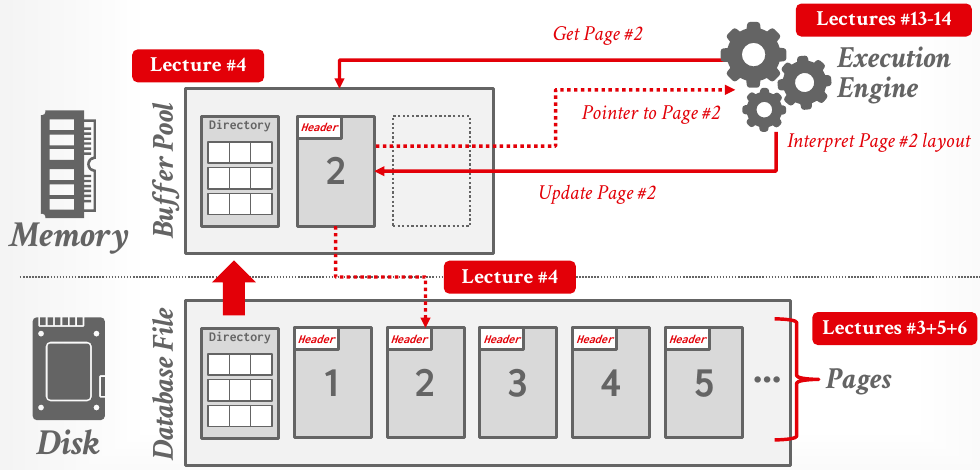
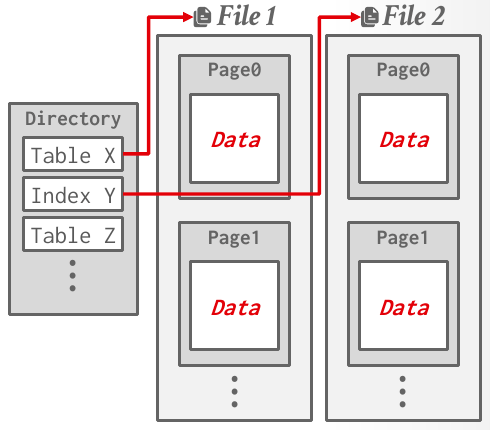

Database Internals in Go · Unit 1 · Lesson 1
Disk-Oriented Storage: Files, Pages, and Heap Files
Why a DBMS treats disk and memory so differently, how it divides a database into fixed-size pages, and how a heap file finds page N.
Unit 0 treated a database as relations and SQL queries. Lecture #01's data-independence picture put a physical schema of pages, files and extents underneath the logical schema and left its design to the DBMS. Lecture #03 is about that physical layer, and this lesson covers its first half: how much slower disk is than memory, what a page is, and how a heap file and its page directory find a page on disk. In Unit 2 your buffer pool will sit directly on top of this layer.
Lecture #01's data-independence diagram puts pages, files and extents in the physical schema, below the logical schema. What does physical data independence give you?
Table t(x) holds five rows: 3, NULL, 3, 5, NULL. What does SELECT COUNT(*), COUNT(x), COUNT(DISTINCT x) FROM t; return?
In this course's Go module, which package holds the pre-built code that reads and writes whole pages in the database file?
Memory versus disk
Lecture #03 starts from one assumption: the primary copy of the database lives on non-volatile disk, and the DBMS moves data between disk and memory as queries need it. A DBMS built this way is disk-oriented, and BusTub is one.
Storage devices form a hierarchy: CPU registers, CPU caches, DRAM, SSD, HDD, network storage. Each step down is larger and cheaper per byte, but slower. The hierarchy splits in two between DRAM and SSD:
- Volatile storage (DRAM and above) loses its contents when the power goes. It supports fast random access to any byte address. The course calls it memory.
- Non-volatile storage (SSD, HDD and below) keeps its contents without power. It is block-addressable: to read one byte at some offset, the program must first load the whole 4 KB block that holds it into memory. It is also better at sequential access than at random access. The course calls it disk and makes no major distinction between SSDs and HDDs.
Lecture #03's table of access times, rescaled so that an L1 cache hit takes one second, shows the size of the gap:
| Device | Latency | If an L1 hit took 1 s |
|---|---|---|
| L1 cache | 1 ns | 1 second |
| L2 cache | 4 ns | 4 seconds |
| DRAM | 100 ns | 100 seconds |
| SSD | 16,000 ns | 4.4 hours |
| HDD | 2,000,000 ns | 3.3 weeks |
| Network storage | ~50,000,000 ns | 1.5 years |
| Tape archives | 1,000,000,000 ns | 31.7 years |
Even an SSD is 160 times slower than DRAM (16,000 ns against 100 ns), and an HDD is 20,000 times slower.
Sequential and random access
Random access on non-volatile storage is almost always slower than sequential access; the slide quotes 80–100 µs per random I/O against 10–100 µs per sequential I/O. So the DBMS tries to maximize sequential access, for example by reducing writes to random pages so that data ends up in contiguous blocks. Allocating multiple pages at the same time is called an extent. Some systems also write sequentially into a buffer and perform the random writes later, in the background.
The lecture's design goals for a disk-oriented DBMS follow from these numbers:
- Manage databases larger than the available memory.
- Manage disk reads and writes carefully, to avoid long stalls and performance degradation.
- Maximize sequential access.
#03 Database Storage I, "Storage Hierarchy and Access" (4:24), slides 6–13: the storage hierarchy, access times, sequential and random access, and the disk-oriented DBMS walkthrough below.
The disk-oriented DBMS

The database file starts with a directory page, followed by data pages that each begin with a header. When the execution engine needs page #2, it asks the buffer pool, which brings the directory and page 2 into memory, hands back a pointer, and keeps the page there while the engine works on it. The engine then interprets the page's layout and may update it.
Lesson 0 described BusTub as layers that each talk only to the one below. Lecture #03 names them, from the top: query planning, operator execution, access methods, the buffer pool manager and the disk manager. Storage is the bottom of that stack, and building it raises two problems:
- How the DBMS represents the database in files on disk. That is this unit.
- How the DBMS manages its memory and moves data back and forth from disk. That is the buffer pool, in Unit 2 and Project 1.
Why not let the operating system move pages with mmap? The lecture notes' short answer: a page fault blocks the process, the DBMS knows more about its data and queries than the OS does, and "you never want to use mmap in your DBMS if you need to write." Unit 2 returns to this.
Files and the storage manager
A DBMS stores a database as one or more files on disk, usually in its own proprietary format. Some systems use a hierarchy of files; SQLite uses a single file. Either way, the OS sees only bytes and knows nothing about what the files contain. Early systems in the 1980s ran custom filesystems directly on raw block storage instead. A few enterprise DBMSs still do (Oracle, Teradata), but most newer systems use the OS's ordinary filesystem. Open, portable file formats that many systems can read, such as Parquet, come up in Lesson 4.
The storage manager is the DBMS component that maintains those files. It organizes them as a collection of pages, tracks what has been read and written to each page, and tracks how much free space is available. Some storage managers schedule their own reads and writes to improve the spatial and temporal locality of pages. A storage manager typically doesn't keep several copies of a page on disk: replication happens below it (for example, RAID) or above it (logical copies of tuples).
Pages
A page is a fixed-size block of data. It can hold tuples, metadata, indexes or log records. Most systems don't mix types within a page, and some require each page to be self-contained: everything needed to read the page is on the page itself.
Each page has a unique page ID. Depending on the system, IDs are unique per DBMS instance, per database or per table. Upper layers ask for a page by ID, and an indirection layer in the storage manager turns the ID into a physical location: a file path and an offset. (If the database is a single file, the page ID can simply be the offset.)
The word "page" has three meanings in a DBMS:
- A hardware page, usually 4 KB, is the largest block of data that the storage device can guarantee to write failsafe. Writing it is atomic: after a crash, either all of it was written or none of it was.
- An OS page is usually 4 KB; on x64 it can also be 2 MB or 1 GB.
- A database page is whatever size the DBMS chooses; the slide gives a range of 512 B to 32 KB. Defaults: 4 KB for SQLite, Oracle, DB2, RocksDB and WiredTiger; 8 KB for SQL Server, Ingres, PostgreSQL and Informix; 16 KB for MySQL. BusTub uses 8 KB (
BUSTUB_PAGE_SIZE = 8192), and so does this course's Go module (common.PageSize).
Bigger than a hardware page
Only the hardware page is written atomically. If the database page is larger, say 16 KB on 4 KB hardware pages, a crash can stop the write partway and leave a page that is half new and half old. A DBMS whose pages are larger than the hardware page has to take extra measures to write them out safely.
The best database page size depends on the environment, the data and the workload. Systems built for read-heavy workloads tend to use large pages (1 MB or more), because one fetch brings in many tuples that the query needs. Systems built for write-heavy workloads tend to use small pages (4–16 KB), because the system must write the entire page to disk even when only a small part of it changed. Whatever the size, most DBMSs keep it fixed: with variable-size pages, deleting a page would leave a hole in the file that new pages can't easily fill.
Heap files and the page directory
DBMSs organize pages in files in different ways: heap, tree, sequential/sorted (ISAM) and hashing file organizations. At this level the DBMS doesn't need to know anything about what is inside the pages.
A heap file is an unordered collection of pages, with tuples stored in random order. It supports four page operations (create, get, write, delete) and must also support iterating over all pages. It needs some metadata to know where pages are and which have free space. If the heap is a single file, finding a page is arithmetic, because pages are numbered from 0:
Offset = Page# × PageSizeOnce the database spans several files, the DBMS also needs to know which file holds a page. The page directory records that.

The page directory is itself made of special pages. It tracks where each data page lives, and it keeps metadata about the pages' contents: the free space on each page, a list of free or empty pages, and each page's type (data or metadata). To get page #23, the DBMS looks up the page's file in the directory, then finds its offset inside that file, again from the page number and the page size. The directory pages must always be kept in sync with the data pages they describe.
Unit 2 introduces a similarly named structure, the buffer pool's page table, which maps page IDs to frames in memory and is never stored on disk. Keep the names apart: the page directory says where pages are in the files.
The pre-built disk.FileManager in storage/disk/ (BusTub's DiskManager) keeps every page in a single database file, but it doesn't compute Page# × PageSize. It keeps an in-memory map from common.PageID to byte offset. The first time a page is written or read, it gets a slot: a freed one if any exists, otherwise the next one at the end of the file. DeletePage puts the page's slot on a free list for reuse. That map is a small indirection layer of the kind the lecture describes. It lives only in memory, so a new FileManager starts with no pages.
BusTub's tables don't use a page directory either. A TableHeap links its pages into a list: each table page's header stores the ID of the next page. You'll see that header in Lesson 2.
The page header
Every page starts with a header of metadata about its contents. The lecture lists page size, checksum, DBMS version, transaction visibility, compression or encoding metadata, schema information, and data summaries or sketches. Some systems, such as Oracle, require pages to be self-contained, so everything needed to interpret a page is on the page itself. After the header comes the data, and how the data is arranged is the subject of Lesson 2.
#03 Database Storage I, "File and Page Management" (21:51), slides 14–23: file storage, the storage manager, the three kinds of page, heap files, the page directory and the page header.
Work it out
The first exercise traces the disk manager that your buffer pool will call in Unit 2. The second makes Offset = Page# × PageSize concrete in Go.
-
What to think about
The FileManager never multiplies a page ID by the page size. It looks the ID up in its map. What happens when an ID isn't in the map yet, and what does a delete leave behind?
The method
Keep two columns: the map (page ID → offset) and the free list. A page seen for the first time takes the last offset on the free list if the list isn't empty; otherwise it takes the next slot at the end of the file, at (number of pages in the map) × 8,192. A delete removes the page from the map and appends its offset to the free list.
The result
Pages 0–3 land at 0, 8,192, 16,384 and 24,576. Deleting page 1 frees offset 8,192, so page 7 lands there, not at 7 × 8,192 = 57,344. The map then holds four pages (0, 2, 3 and 7), so page 8 lands at 4 × 8,192 = 32,768.
-
What to think about
This file is a one-file heap with pages numbered from 0, so the lecture's formula tells you where page k starts. Which
*os.Filemethods take an absolute offset, so you never have to seek?The method
Use
WriteAtandReadAt. For each k from 0 to 3, fill an 8,192-byte buffer withbyte(k)(for example withbytes.Repeat) and write it at offset k × 8,192. Then read 8,192 bytes at offset 2 × 8,192 into a fresh buffer, and get the size fromf.Stat().The result
_, err = f.WriteAt(page, int64(k)*pageSize) // inside the loop _, err = f.ReadAt(buf, 2*pageSize)It prints 2 and 32768 (4 × 8,192). The disk manager in
storage/disk/does the same thing, with its map supplying the offset.
Check your understanding
A heap file is stored as one file of 8 KB (8,192-byte) pages, numbered from 0. Using the formula from the lecture, at what byte offset does page #23 begin?
A DBMS uses 16 KB database pages on a storage device whose hardware page is 4 KB. Which statement matches the lecture?
A table's heap is spread across several files. How does the DBMS find the page with ID 23?
A DBMS's workload is dominated by queries that scan large parts of each table and rarely modify anything. Which page size does the lecture suggest, and why?
Page# × PageSize. Ask your teacher (me) before moving on.
Primary sources: CMU 15-445/645 Fall 2025 lecture #03, Database Storage I (slides 3–23 and notes §1–9); BusTub src/include/common/config.h, src/include/storage/disk/disk_manager.h, src/storage/disk/disk_manager.cpp and src/include/storage/table/table_heap.h at commit d49b823; intro_to_db/storage/disk/file_manager.go.